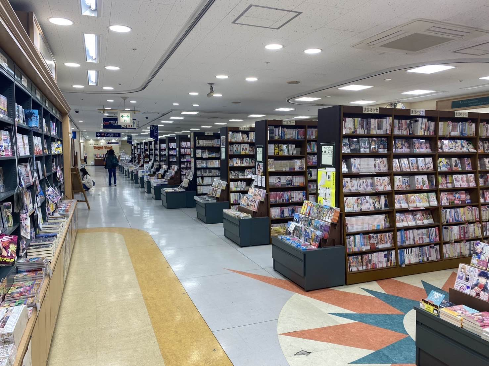
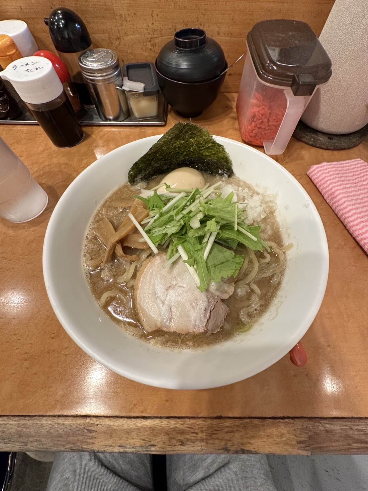

※千葉工業大学PM学科の実験用のサイトです
津田沼のお店
津田沼のお店紹介

丸善 津田沼店
JR津田沼駅南口から徒歩3分というアクセスの良さと坪数1000坪という広大な関東最大級の広さがうれしい大型書店です。
広々とした店内には、新刊から専門書、参考書まで幅広いジャンルの書籍を取り揃えています。また、高品質な文房具や雑貨も充実しており、
プレゼント選びにも最適です。地元津田沼に特化したコーナーもあり、地域の文化が感じられる工夫がされています。
店舗情報
所在地 千葉県習志野市谷津7-7-1 Loharu津田沼 B棟 2~3F
アクセス 津田沼駅南口から徒歩3分、駐車場有
営業時間 平日 : 10:00~21:00
土日祝 : 10:00~20:00
水曜不定休(月1回)
お問い合わせ TEL: 03-6367-6185

こってりラーメン なりたけ
津田沼エリアで人気の濃厚背脂ラーメン専門店です。創業以来、こだわり抜いた濃厚なスープともちもちの中太麺が多くのファンを魅了しています。たっぷりと浮かぶ背脂が特徴で、旨味とコクのあるスープは一度食べたら忘れられない味わいです。トッピングの種類も豊富で、自分好みの一杯をカスタマイズできます。特に人気の「チャーシュー麺」はボリューム満点で食べ応え抜群です。
たっぷりと浮かぶ背油が特徴で、旨味とコクのあるスープは一度食べたら忘れられない味わいです。トッピングの種類も豊富で、自分好みの一杯の
カスタマイズもできます。
店舗情報
所在地 千葉県船橋市前原西2-11-7
アクセス JR津田沼駅北口から徒歩5分
営業時間 11:00~翌3:00 水曜日定休
お問い合わせ 047-477-7987